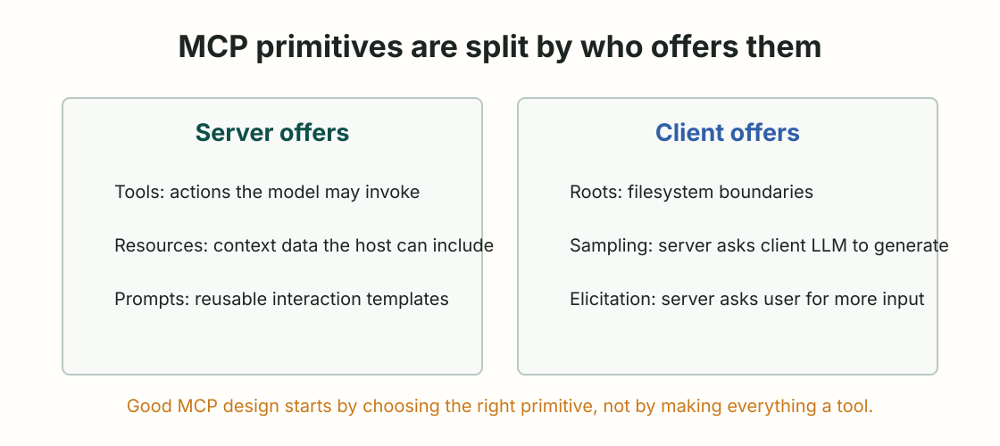

MCP Fundamentals
协议原语速查
把 tools、resources、prompts、roots、sampling、elicitation 的边界放到一张表里。
MCP 最常见的误用，是把所有东西都塞进 tool。其实官方规范把能力分成 server 侧和 client 侧：server 可以提供 resources、prompts、tools；client 可以提供 roots、sampling、elicitation。总览见 MCP Specification。

| 原语 | 谁提供 | 谁控制 | 主要用途 | 典型方法 |
|---|---|---|---|---|
| Tools | Server | Model-controlled，host 应保留人类确认 | 让模型执行动作、查询 API、计算、写入外部系统 | tools/list、tools/call |
| Resources | Server | Application-driven，由 host 决定如何纳入上下文 | 暴露文件、数据库 schema、API 响应等上下文 | resources/list、resources/read |
| Prompts | Server | User-controlled，通常由用户显式选择 | 暴露可复用的交互模板、slash command、工作流入口 | prompts/list、prompts/get |
| Roots | Client | Client-controlled | 告诉 server 可操作的文件系统边界 | roots/list |
| Sampling | Client | Client-controlled，通常需要用户审核 | server 请求 host 侧 LLM 生成，不直接持有模型密钥 | sampling/createMessage |
| Elicitation | Client | Client-controlled，用户可拒绝 | server 通过 client 向用户请求补充信息 | elicitation/create |
官方 tools 规范说，MCP server 可以暴露可由语言模型调用的工具；工具有唯一 name，并包含描述输入 schema 的 metadata，见 Tools。
关键字段：
| 字段 | 意义 | 设计提醒 |
|---|---|---|
name | server 命名空间内的唯一工具名 | 不要叫 run、do、query 这种含混名字 |
title | 给用户看的标题 | UI 可读，不等于模型判断的全部依据 |
description | 工具何时该用、做什么 | 这是模型选择工具的重要线索 |
inputSchema | JSON Schema 输入定义 | 是调用边界，不是业务逻辑本身 |
安全提醒：官方 tools 文档强调，工具调用应保持 human-in-the-loop，应用应让用户清楚看到暴露了哪些工具、工具何时被调用，并在必要操作前确认。
Resources 是 server 暴露给 client 的上下文数据。官方 resources 规范说，resource 由 URI 唯一标识，可以代表文件、数据库 schema 或应用特定信息，见 Resources。
常见字段：
| 字段 | 意义 | 例子 |
|---|---|---|
uri | 唯一资源标识 | file:///project/src/main.py |
name | 资源名称 | main.py |
title | 可选的人类可读标题 | Application Entry Point |
description | 资源说明 | Primary app entry point |
mimeType | 内容类型 | text/x-python |
Resources 的品味点：如果内容是“给模型读”，优先考虑 resource；如果内容是“让模型做”，再考虑 tool。
Prompts 让 server 暴露结构化消息和指令模板。官方 prompts 规范说，prompts 是 user-controlled，通常通过用户发起的命令触发，比如 slash command，见 Prompts。
常见字段：
| 字段 | 意义 | 设计提醒 |
|---|---|---|
name | prompt 名称 | 稳定、短、可脚本化 |
title | UI 显示名称 | 让用户知道它要做什么 |
description | prompt 用途说明 | 说明输入、输出和适用场景 |
arguments | 可配置参数 | 只放真正改变输出的参数 |
Prompts 适合把“团队已经认可的工作流”产品化，不适合把所有系统提示词都塞进去。
| 原语 | 官方定位 | 设计风险 |
|---|---|---|
| Roots | client 暴露文件系统边界，server 可请求 roots/list，见 Roots | 边界过宽会让 server 看到不该看的路径 |
| Sampling | server 通过 client 请求 LLM 生成，见 Sampling | server 不应绕过用户审查去发起模型调用 |
| Elicitation | server 通过 client 向用户请求更多信息，见 Elicitation | 敏感信息不能用 form mode 乱收，URL mode 也要清楚展示域名 |
这三个能力容易被忽略，因为很多初学者只写 server tool。但如果你在设计一个成熟 host，它们会直接影响用户信任和安全边界。
| 方法 | 方向 | 用途 |
|---|---|---|
initialize | client -> server | 协议版本、能力和实现信息协商 |
notifications/initialized | client -> server | 初始化完成通知 |
tools/list | client -> server | 列出可用工具 |
tools/call | client -> server | 调用工具 |
resources/list | client -> server | 列出资源 |
resources/read | client -> server | 读取资源内容 |
resources/templates/list | client -> server | 列出参数化资源模板 |
prompts/list | client -> server | 列出 prompt |
prompts/get | client -> server | 获取 prompt 内容 |
roots/list | server -> client | 请求 client 暴露的 roots |
sampling/createMessage | server -> client | 请求 host LLM 生成 |
elicitation/create | server -> client | 请求用户补充信息 |
| 你想要什么 | 优先选 |
|---|---|
| 读一份文件或 schema | Resource |
| 执行一个有副作用的动作 | Tool |
| 给用户一个可复用工作流入口 | Prompt |
| 让 server 知道工作区边界 | Root |
| 让 server 借用 host 的模型能力 | Sampling |
| 让 server 追问用户缺失信息 | Elicitation |
这张表不是规范原文，而是本课程对官方原语的学习整理。它的价值在于减少一个常见坏习惯：把数据、动作、模板、用户交互都伪装成 tool。